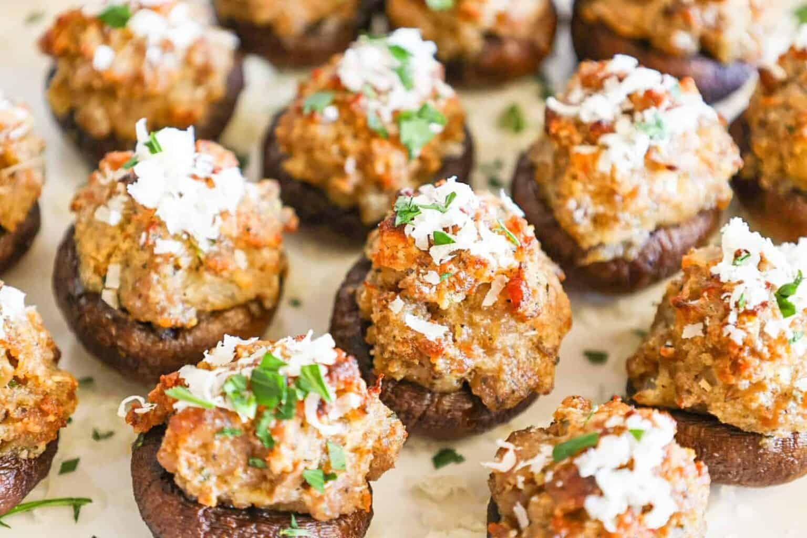

Sausage Stuffed Mushrooms

Description
Enjoy this savory and creamy stuffed mushrooms—an enticing appetizer that captivates the taste buds.
Each bite offers a delightful combination of tender mushrooms filled with a creamy, savory filling, creating a perfect
balance of richness and satisfaction. A guaranteed crowd-pleaser that will leave you craving more.
Ingredients:
- 16 extra-large white mushrooms
- 2 1/2 tablespoons of Marsala wine
- 3/4 pound sweet italian sausage,removed from cashings
- 6 scallions, minced
- 2 garlic cloves,minced
- 2/3 cup panko crumbs
- 5 ounces Mascarpone cheese
- 1/3 cup grated Parmesan cheese
- 2 1/2 tablespoons fresh parsley,minced
- 5 tablespoons olive oil
- Ground pepper
- Kosher salt
Directions:
- Preheat the oven to 325 degrees F.
- Remove the stems from the mushrooms and chop them finely.
Set aside. Place the mushroom caps in a shallow bowl and toss with 3 tablespoons of the olive oil and Marsala. Set aside.
- Heat the remaining 2 tablespoons olive oil in a medium skillet over medium heat. Add the sausage, crumbling it with the back of a wooden spoon.
Cook the sausage for 8 to 10 minutes, stirring frequently, until it's completely browned. Add the chopped mushroom stems and cook for 3 more minutes.
Stir in the scallions and garlic and cook for another 2 to 3 minutes, stirring occasionally. Add the panko crumbs, stirring to combine evenly with all the other ingredients.
Finally, swirl in the mascarpone and continue cooking until the mascarpone has melted and made the sausage mixture creamy. Off the heat, stir in the Parmesan,
parsley, and season with salt and pepper,to taste, Cool slightly.
- Fill each mushroom generously with the sausage mixture. Arrange the mushrooms in a baking dish large enough to hold all the mushrooms in a snug single layer.
Bake until the stuffing for 50 minutes,until the stuffing is browned and crispy.